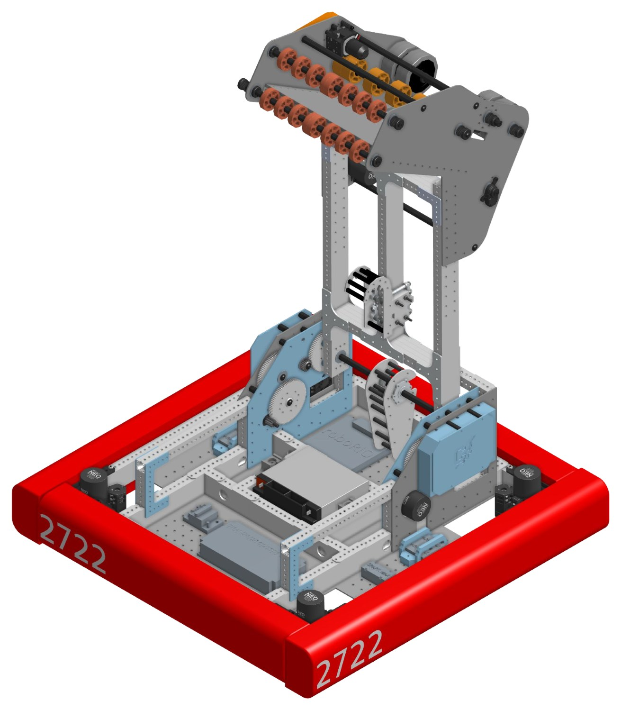
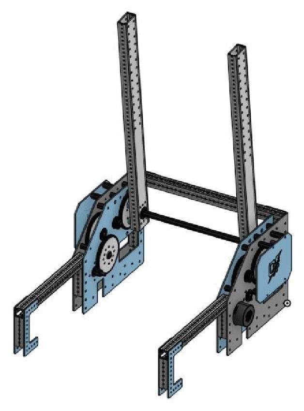
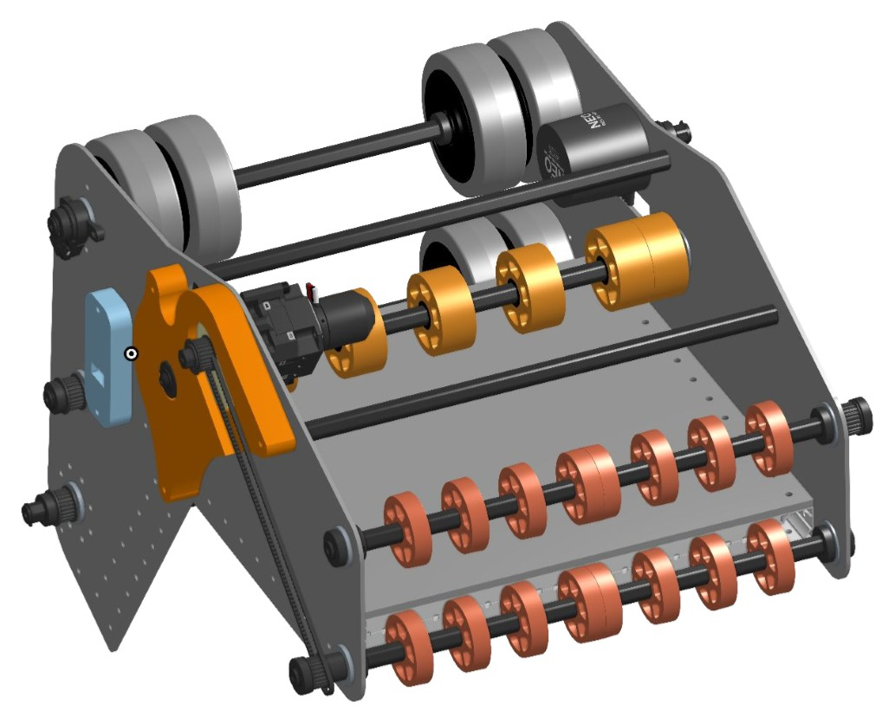
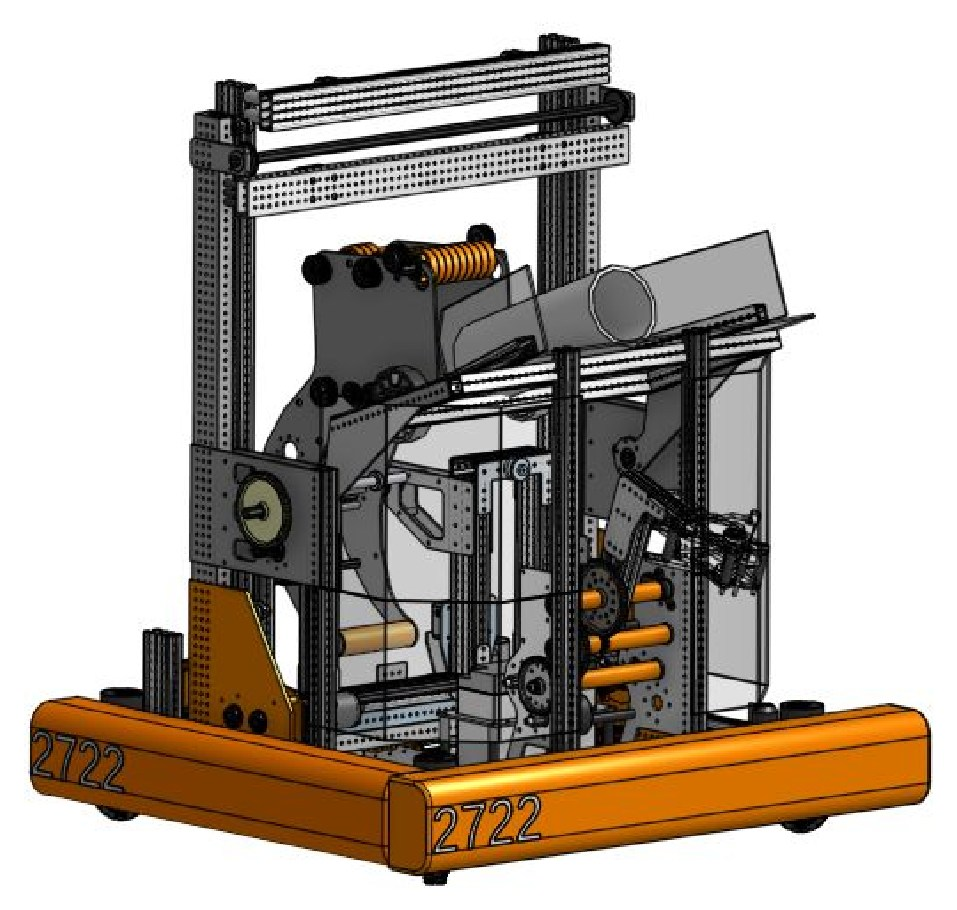
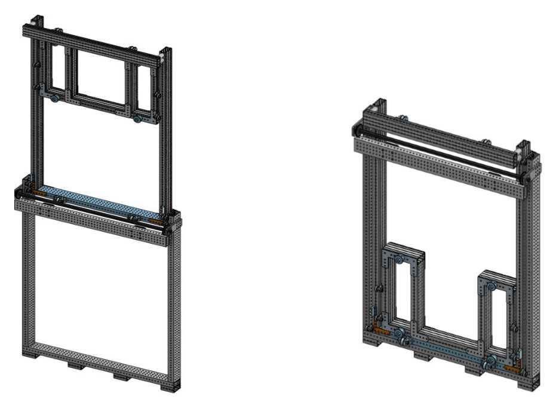
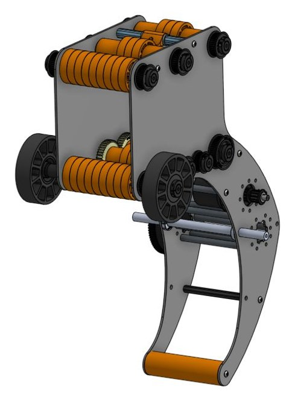
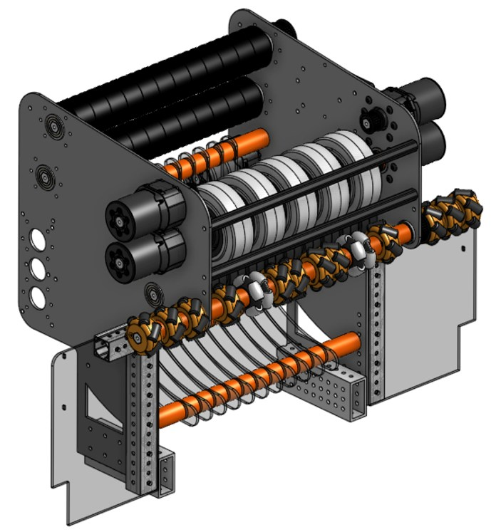
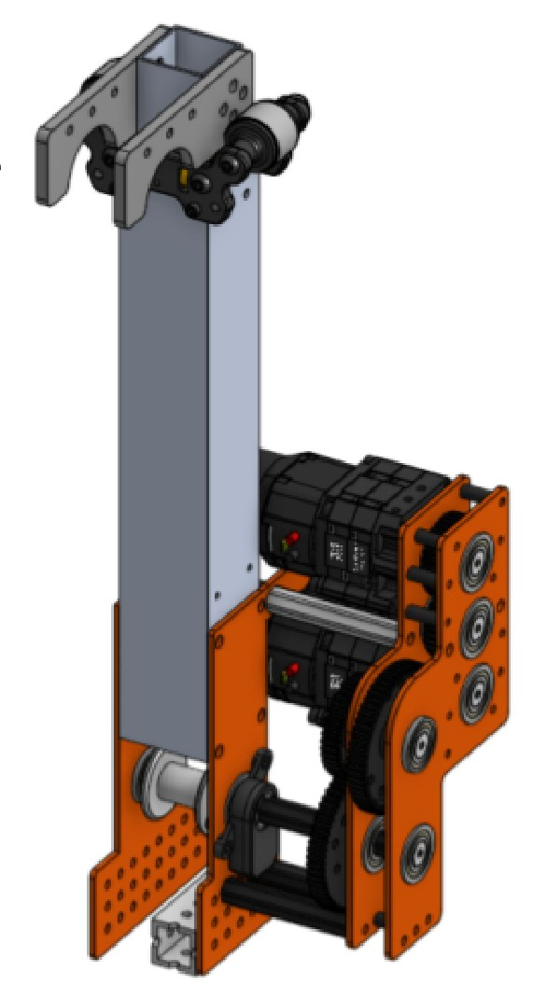

Charge Robotics FRC Team 2722 - Positional and Velocity PID Controllers
Three PID velocity and positional controllers built in Java to smoothly and reliably control a competitive robot's subsystems, as Robot Operator and GitHub Specialist for Charge Robotics.
Overview
As part of Charge Robotics, a competitive robotics team based in Marlton, NJ, I served on the Executive Board as Robot Operator and GitHub Specialist, directing a subteam of 5+ members responsible for integrating software across the robot's subsystems. The core of that work was building reliable closed-loop control for the robot's motors.
Process
I built three PID velocity and positional controllers in Java and tuned them for smooth, reliable control across all of the robot's subsystems, which increased the performance of five end effectors by making better use of the available motors and sensors. Alongside the build work, I taught and onboarded new software members on GitHub and VS Code, and managed the team's repositories throughout the season.
Subsystems
These are the CAD models of the subsystems that I designed PID controllers for and integrated together, from Charge Robotics' 2024, 2025, and 2026 seasons.









Results
At competitions, I operated the robot's end effectors and helped spearhead strategy sessions between matches. That combination of reliable control systems and in-match strategy helped lead the team to district finalists.